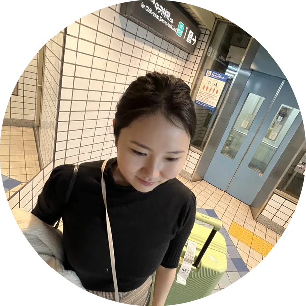
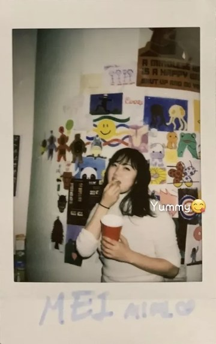

Se Yeon Choi
I study how people, AI, machines, and robots interact, and the mechanisms it takes to build those interactions.
About
I am an independent researcher working at the intersection of human-computer interaction and creative AI. My interest is less in what AI can generate on its own, and more in what happens in the space between a person and a system: how intent gets communicated, where trust breaks down, and what makes a collaboration feel like a partnership rather than a tool.
My background is in product design and UX research, most recently at Wrtn Technologies and Accenture. I approach problems by building things, watching people use them, and paying close attention to the moments that surprise me.
I am currently preparing to pursue a master's degree in HCI, with a focus on human-AI interaction and creative collaboration.
Experience
- Wrtn TechnologiesProduct Designer2025.02–2026.05
- AccentureUX Senior Analyst2022.08–2025.08
- DeloitteResearch Intern2021.06–2021.08
- Yahoo!UI Design Intern2020.09
- IBMUX Design Intern2020.08
소개
저는 HCI와 크리에이티브 AI가 만나는 지점에서 연구하는 독립 연구자입니다. AI가 혼자 무엇을 만들어내는가보다, 사람과 시스템 '사이'에서 일어나는 일에 더 관심이 있습니다. 의도가 어떻게 전달되는지, 신뢰가 어디서 무너지는지, 그리고 무엇이 그 협업을 단순한 도구가 아닌 파트너십으로 느끼게 하는지를 봅니다.
프로덕트 디자인과 UX 리서치를 배경으로 일해왔고, 가장 최근에는 뤼튼테크놀로지스와 액센츄어에 있었습니다. 직접 만들어보고, 사람들이 쓰는 모습을 관찰하고, 예상을 벗어나는 순간들에 주목하는 방식으로 문제에 접근합니다.
현재 인간-AI 상호작용과 창의적 협업을 중심으로 HCI 석사 과정을 준비하고 있습니다.
경력
- Wrtn Technologies프로덕트 디자이너2025.02–2026.05
- AccentureUX 시니어 애널리스트2022.08–2025.08
- Deloitte리서치 인턴2021.06–2021.08
- Yahoo!UI 디자인 인턴2020.09
- IBMUX 디자인 인턴2020.08
Contact
Open to graduate study opportunities, research collaborations, and conversations about human-AI interaction.
연락
대학원 진학 기회, 연구 협업, 그리고 인간-AI 상호작용에 대한 이야기를 환영합니다.

